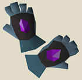
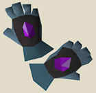
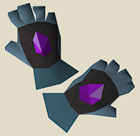

Items that can be used to gain a small experience or a quality of life boost
within a specific skills in return for sinking items or using gravitite.

Items that can be used to gain a small experience or a quality of life boost
within a specific skills in return for sinking items or using gravitite.
Gravitite: Untradeable resouce earned in various dimensions, used primarily to reduce supplies in game by sending supplies back into the ether and beyond for rewards!
o Agility: Send marks of grace into the ether by combinding with x amount of gravitite and get rewarded in agility experience. Also, can add Gravitite to stamina potions to prolong its effect.
o Construction: Send planks into the ether by combinding with x amount of gravitite and get rewarded in construction experience.
o Cooking: Send cooked food into the ether by combinding with x amount of gravitite and get rewarded in Cooking experience.
o Crafting: Send D'hide items and battlestaffs into the ether by combinding with x amount of gravitite and get rewarded in additional crafting experience.
o Farming: Send saplings into the ether by combinding with x amount of gravitite and get rewarded in farming experience. Also, add gravitite to Ultra compost and user will recieve a 15% chance to consume any yield to and get rewarded in additional farming experience.
o Firemaking: Send logs into the ether by combinding with x amount of gravitite and get rewarded in Firemaking experience. Also, add gravitite to noted logs and logs will burn for half the amount of time they do in game normally.
o Fishing: Send raw fish into the ether by combinding with x amount of gravitite and get rewarded in fishing experience.
o Fletching: Send arrowheads, dart-tips and bows (strung and unstrung) into the ether by combinding with x amount of gravitite and get rewarded in fletching experience.
o Herblore: Send grimy and clean herbs into the ether by combinding with x amount of gravitite and get rewarded in herblore experience. Also, add gravitite to magic secateurs and user will recieve a 10% chance to consume a herb yield and get rewarded in additional herblore experience.
o Hunter: Send chinchompas into the ether by combinding with x amount of gravitite and get rewarded in Hunter experience.
o Thieving: Send crystal teleport seeds and blood shards into the ether by combinding with x amount of gravitite and get rewarded in thieving experience.
o Mining: Send ores into the ether by combining with x amount of gravitite and get rewarded in mining experience. Also, add gravitite to charge a pickaxe and user will recieve a 10% chance that a mined ore is noted instead.
o Prayer: Send bones into the ether by combining with x amount of gravitite and get rewarded in prayer experience. Also, add gravitite to noted bones and bones will have a 5% chance at consuming two bones instead of one on an altar.
o Runecraft: Send rune and pure essence into the ether by combining with x amount of gravitite and get rewarded in runecrafting experience.
o Smithing: Send bars into the ether by combining with x amount of gravitite and get rewarded in smithing experience.
o Woodcutting: Send logs into the ether by combining with x amount of gravitite and get rewarded in Woodcutting experience. Also, add gravitite to charge a woodcutting axe and user will recieve a 10% chance that a cut log is noted.
Returnal items:

Items that can be used to gain a small experience or a quality of life boost
within a specific skills in return for sinking items or using gravitite.
Returnal Hammer: Untradeable hammer obtained in a digsite dimension that allows the user to charge hammer
using gravitite. This will allow a 2% chance of a plank to be consumed while doing construction, granting
the user the experience of that item. For example, user is building mahogany tables in their POH with a
charged hammer. The table cost 6 planks but there was a hammer proc; 12 planks will be removed from the
players inventory in a single tick, granting them 840(2)=1,680 experience. Users will be required to
pay a one time fee of 400 planks, 300 oak planks, 200 teak planks and 100 mahogany planks before using
this hammer.
Additionally, this hammer can be charged with bars giving the user a 10% chance of a bar being consumed
while smithing, granting the user experience. Users will be required to pay a one time fee of 1k iron
bars, 750 steel bars, 500 adamant bars and 250 runite bars before using this hammer.
Returnal Gauntlets: Untradeable gauntlets obtained in a lumbridge swamp dimension that allows the user to charge gauntlets using cooked fish and when cooking, there is a 10% chance that you consume a cooked fish in your inventory, in return gaining its cooking experience. For example, user charges gauntlets with 5 shrimp then cooks an inventory of 28 shrimp. During that inventory, 3 shrimp that were cooked are consumed, granting the user 3(30)=90 experience in cooking and leaving them with 25 shrimp and 2 charges left on gauntlets. Users will be required to pay a one time fee of 400 cooked swordfish, 300 cooked monkfish, 200 cooked sharks and 100 cooked anglerfish before using these gauntlets.
Returnal Needle: Untradeable needle obtained in a Kharidian desert dimension that allows the user to charge needle with leather(s). This will allow a 2% chance for a tanned leather to be converted into crafting experience while creating items and a 5% chance to consume a leather item being crafted for additional crafting experience. For example, user charges their needle with 9 leather and crafts an inventory of d'hide bodies with a returnal needle, thread and 26 leathers. Normally, the user would craft 8 bodies and be left with 2 stand alone leather but during the crafting, the needle proc's twice, allowing the 2 additional leather to be consumed while granting the user the additional experience. Within, the same inventory, the needle proc's again, consuming one of the bodies while granting the user the experience of crafting that body in return for consuming 3 leather charges. At the end of this inventory, the user would have 7 bodies, 6 leather charges on needle remaining and additional experience gained for the 2 leather and 1 body consumed. Users will be required to pay a one time fee of 400 green dragon leather, 300 blue dragon leather, 200 red dragon leather and 100 black dragon leather before using this needle.
Returnal tinderbox: Untradeable tinderbox obtained in a Kourend Woodlands dimension that allows the user to charge a tinderbox with either logs or/and gravitite. When burning logs, this will allow the user to either not move to the left by consuming a charge of a log or allow the user to move to the right, instead by consuming a charge of gravitite. For example, users now are forced to the left after burning a log. They can run to the right, 3 tiles after burning and do 2 more logs before having to move 3 tiles again, then burning 1 log. Rinse and repat. With this tinderbox, a player could light a log using gravitite charge, forcing them to the right, run 3 more tiles for a total of 4 tiles (or 5 tiles away from the burned log) before having to burn another log. This would give the user 4 more tiles of using a normal tinderbox to the left before having to rinse and repeat. Users will be required to pay a one time fee of 400 logs, 300 maple logs, 200 magic logs and 100 redwood logs before using this tinderbox.
Returnal rod: Untradeable fishing rod obtained in a Entrana dimension that allows the user to charge a fishing rod
with fish or/and gravitite. When fishing, user has 10% chance to consume the fish being caught for addtional fishing
experience by consuming a fish charge on their rod. User can also fish in a new fishing location that uses gravitite
charges as bait. This new fish acts as a combo eating food item (such as karambwan) and heals 20. Additionally, user
can heal over max HP with it (such as anglerfish). Users also have a 10% chance at noting a fish while fishing by
using gravitite charges. Users will be required to pay a one time fee of 400 raw shrimp, 300 raw lobster, 200 raw
karambwan and 100 raw manta ray before using this rod.
Returnal knife: Untradeable knife obtained in a Fremmenik Province dimension that allows the user to charge a knife
with arrows and darts. While combining arrow shafts to arrowheads, there is a 10% chance that 30 arrows will be
fletched instead of the normal 15, granting the user double the experience. While combining dart-tips to feathers,
there is a 10% chance that 20 darts will be fletched instead of the normal 10, granting the user double the
experience. Users will be required to pay a one time fee of 400 rune arrows, 300 rune darts, 200 rune arrows and 100
dragon arrows before using this knife.
Returnal chisel: Untradeable chisel obtained in a Haunted Woods dimension that allows the user to charge a chisel with uncut gems. While cutting gems, if a gem was to be crushed, instead the gem is cut while one of the gems used to charge the chisel is consumed. For example, user charges chisel with 10 uncut gems and has a chisel and 27 uncut gems in inventory. User cuts all gems in inventory leaving them with 27 cut gems, however in the process 4 of them would of been crushed. This leaves the user with 6 charges remaining on chisel. Users will be required to pay a one time fee of 400 uncut sapphires, 300 uncut emeralds, 200 uncut rubies and uncut 100 diamonds before using this knife.
Returnal boxtrap: Untradeable boxtrap obtained in a Feldip Hills dimension that allows the user to charge a boxtrap with chinchompas. While catching chinchompas, if a chinchompa was to escape the trap, instead the user has a re-roll at catching the chinchompa again while one charge of the boxtrap is consumed. For example, user charges their boxtrap with 10 chinchompas. User then attempts to catch a chinchompa. The catch was unsuccessful so a re-roll occurs and the catch is unsuccessful again. The user re-sets the trap and has an unsuccessful attempt at catching a chinchompa, however on the re-roll, he catches it. The user now has 1 chinchompa and 8 charges remaining on his boxtrap. Users will be required to pay a one time fee of 400 box traps, 300 chinchompas, 200 red chinchompas and 100 black chinchompas before using this boxtrap.
Returnal binding necklace: Untradeable necklace obtained in a Ape Atoll dimension that allows the user to charge a necklace with binding necklaces and/or gravitite. This necklace acts as a binding necklace that can hold unlimited charges. Also, players do not have to use magic imbue to craft combination runes by consuming gravite charges instead. Users will be required to pay a one time fee of 400 mist runes, 300 mud runes, 200 steam runes and 100 lava runes.
Gravity Robe Set:
Gravity robe set works as a set effect where you must have all 5 items equipped in order to recieve any benefits from
it. In addition to the new prayer book, there will be 3 new prayers in game that allow the player to gain significant
equipment bonuses depending on which prayer they are using. The stats will be similar, both offensively and defensively,
to the current BIS equipment; Masori, Nex and Ancestral. The armor changes color depending on which prayer is being used
(green for range, blue for mage and red for melee). Players need 70 defense to wield.
For example, a player can wield the robe set and pray the melee prayer and get bonuses similar to full Nex then they
could swap to the range prayer and immedietley get bonuses similar to full Masouri, without having to swap any armor
pieces.
There will still be a gap in the meta because players risking full Nex or Masouri would be able to get bonuses
from gloves and boots slots; two slots the gravity robe set loses. Additionally, players using gravity robes will not
be able to use any prayers in the game, outside of protection prayers (protect item can't be used). This will force a
higher risk in a pvp scenerio.
For example, a player could hybrid with mage and range, only bringing in two weapons: dragon crossbow and toxic Staff.
Player could swap between these two items, similtenously with the combat prayers to get bonuses as if they are wearing
Ancestral and Masori. If that player is killed, they will lose both items since they have strong bonuses compared to
what they would lose if they brought in those armor pieces, seperatley.
This will heavily increase the complexity of pvp and can be a great set of armor for players to go for mid to late game
in pvm. The risk from the player will be from the weapons they bring into the wild and having to rely on maintaining high
prayer while fighting. The prayers will drain 50 points/min (10 points faster than Piety). This item will be tradeable
and obtained while completing dimensions. When a player dies in the wild with these robes, the pieces will be uncharged,
creating a sink for the pvm items required to charge each of the pieces again.
Gravity Robe Hood: Players can recieve this item in a Kharidian Desert dimension and charged with a archer, berserker and farseer helmet.
Gravity Robe Top: Players can recieve this item in a Haunted Woods dimension and charge with a mystic robe top, black d'hide body and a rune platebody.
Gravity Robe Bottoms: Players can recieve this item in a Entrana Dimension and charge with a mystic robe bottom, black d'hide chaps and rune platelegs.
Gravity Gloves: Players can recieve this item in a Mos Le'Harmless dimension and charge with mystic gloves, black d'hide vambs and a pair of rune gloves.
Gravity Boots: Players can recieve this item in a Prifddinas dimension and charge with mystic boots, snakeskin boots and runite boots.
Item:
Item:
Item:
Item:
Item: